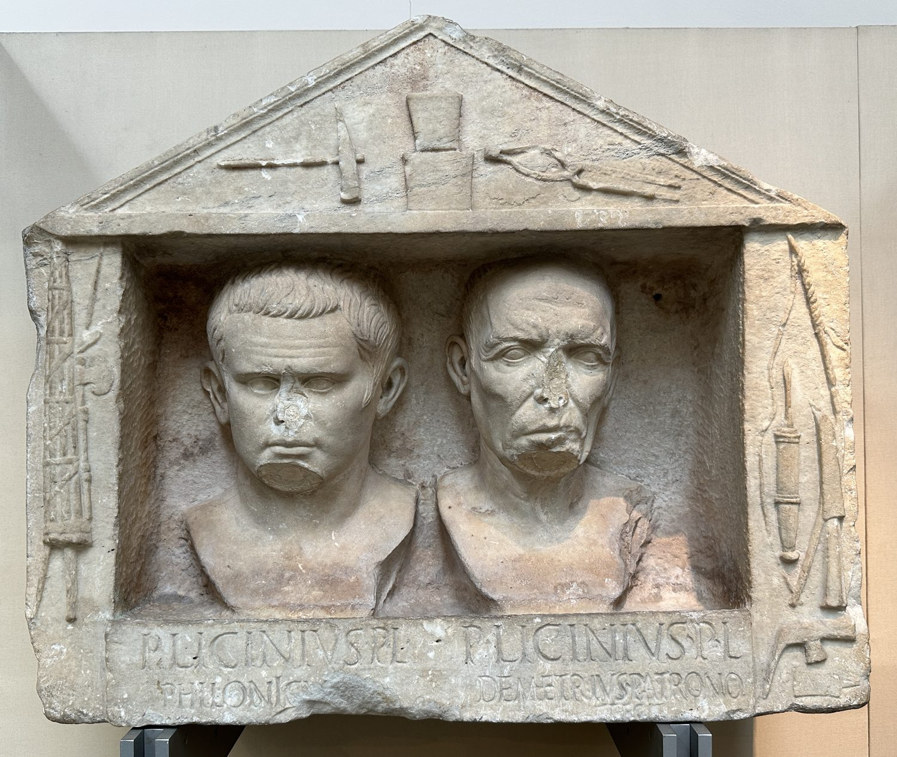
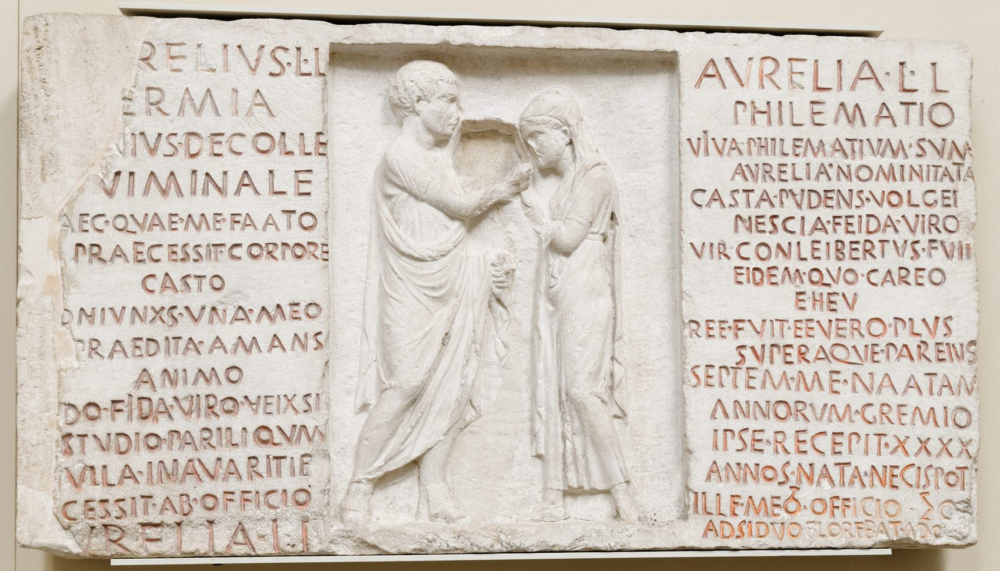
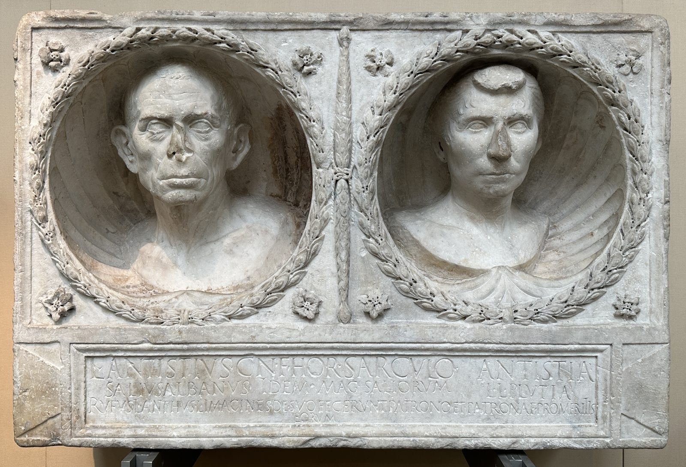

Unit 6 · Slavery in ancient Rome · Lesson 11
Freedom? Manumission and freed people
How did an enslaved person become free, what did freedom give the owner and the freed person, and how far can we trust what our sources tell us?
Year 11 Ancient History · Present with → or space · Read on a phone with R

Review · books closed · 6 minutes · press K for the timer
Five questions on earlier sources, and one view to account for
- What clothing does Cato 59.1 set for the hands, and what does his Latin leave out? “A tunic 3½ feet long and a blanket every other year”, with the old one taken back and patched. In Cato’s Latin “every other year” goes with the blanket, so how often a tunic was issued is not given.
- What does Columella 1.6.3 say there “should be” for those in chains, and is it a record or a plan? “an underground prison, as wholesome as possible”, with narrow windows too high to reach. It is Columella’s plan (“there should be”), not proof that every farm had one.
- When is the Zoninus collar dated, and what does that mean for how we use it? The 4th century CE or later: after our period (about 200 BCE to 200 CE). It shows owners still restraining people who ran away, a century or more later; it cannot show what was done in our period.
- Who says hired hands are “more profitable” (Varro 1.17.3), and what is the limit on that claim? A speaker in Varro’s dialogue, Scrofa: “this is my opinion”. It is one speaker’s view that “it is more profitable to work unwholesome lands with hired hands than with slaves”; the extract does not say how many owners did it.
- What does Strabo say Delos “could” do, and is that a count? That it “could both admit and send away ten thousand slaves on the same day”: a claim about what the market could handle, not a count of daily sales. He gives the Romans, who after growing rich “used many slaves”, as the cause.
- Writing · account for this view in one sentence: Varro’s dialogue advises giving foremen “mates”. Attribute the view, then explain it from the writer’s position and purpose. For example: A speaker in Varro’s dialogue, advising a farm owner, urges that foremen have “mates from among their fellow-slaves” because, he says, this makes them “more steady and more attached to the place”: his reason is the owner’s gain.
Mark your own answers in a different colour. Which question did you find hardest?
Learning intentions and success criteria · 2 minutes
Today’s goals
- analyse manumission and the status of freed people
- balance the perspectives of enslaved people, owners and freed people in one paragraph
- explain how and why owners freed enslaved people, and the limits Augustus set
- analyse how freed people presented themselves on their tombs
- write a paragraph that weighs perspectives and concedes a counter-view
Syllabus outcomes: AH-11-03 explains the role and significance of forces, features, events, individuals and groups in shaping the past · AH-11-04 accounts for the different perspectives of individuals and groups in their historical context · AH-11-05 analyses different types of sources for evidence to support a historical account or argument · AH-11-07 communicates historical understanding, applying historical knowledge, terms and concepts. Life Skills: AH-LS-07 identifies different perspectives of the past · AH-LS-11 communicates information about the past using historical terms and concepts.
Note-making · the routine for the whole course
How to structure your notes
questions and key terms, written after
short phrases, arrows (→ leads to), abbreviations (c. = about; ↔ = compared with)
- 1A new pageA cue column about a quarter of the page wide; title and date at the top; room for a summary at the bottom.
- 2Listen and look, then writePhrases, not sentences. For every source today: who made it, for whom, and what it cannot show.
- 3Write your own notes at the ✎ checkpointThen compare with the model notes, one row at a time. Add what you missed in a second colour.
- 4Write the cue questions afterwardsUse exam verbs: explain, account for. To revise, cover your notes and answer the cues.
- 5Finish with a three-sentence summaryOne checkpoint today: manumission and its limits. The three-perspective grid in your booklet (enslaved | owner | freed person) is where you collect evidence from the tombs and the written sources.
Key vocabulary · add to the unit word wall
Words for freeing, patrons and paragraphs
| From the unit list | Meaning |
|---|---|
| Assess (NESA) | NESA, Glossary of key words: ‘Make a judgement of value, quality, outcomes, results or size.’ Department advice: make and support a judgement. |
| Concession | Admitting the strongest counter-view before resolving: ‘The case against… rests on…, but…’ |
| Manumission | Freeing an enslaved person; formal manumission usually made the person a Roman citizen. |
| Freedman / freedwoman | A formerly enslaved person (libertus, liberta), who owed duties to the former owner. |
| From the unit list | Meaning |
|---|---|
| Patron | The former owner of a freed person. |
| Lex Aelia Sentia / lex Fufia Caninia | Augustan laws (4 CE; usually dated 2 BCE) limiting who could be freed and how many by will. |
| Added today · citizen | A full member of the Roman state, with its legal rights. Gaius 1.17: an enslaved person freed in the right way “becomes a citizen of Rome”. |
| Added today · status | A person’s standing: the rights the law gave them, and how others treated them. |
1 · Tomb reliefs · We do — See – Think – Wonder · 5 minutes · no labels yet · press K for the timer
Look closely before you read anything about them



Images: APK (CC BY 4.0) · Marie-Lan Nguyen (CC BY 2.5) · APK (CC BY 4.0). Full details on the last slide.
Describe only what anyone could check: shapes, people, objects, letters. No guesses yet.
What do you think each was made for, and who might have ordered it? Mark each idea sure, probably or maybe.
What would you need to know before you could say more? Compare two of A, B and C on your sheet.
1 · Tomb reliefs · We do — the reveal · 5 minutes
Three tomb reliefs in the British Museum: how do the people choose to be seen?
On the left are the rods and axes used in the ceremony of freeing a slave.
Names with “P · L” (freedman of Publius); the last word that survives is patrono: “made [this tombstone] to [his] patron”.
Publius Licinius Philonicus and Publius Licinius Demetrius · Roman, about 30–10 BCE · Villa Muti, Frascati · British Museum, GR 1954,1214.1 · gallery label as transcribed on Commons
This is one of the earliest reliefs to commemorate the legitimate marriage of former slaves.
Both names include “L. l.”, freed by a Lucius Aurelius; he is a butcher (lanius), and she calls him her fellow freedman (conleibertus).
Aurelius Hermia and Aurelia Philematium · Rome, about 80 BCE · a tomb by the Via Nomentana · British Museum, GR 1867,0508.55 · gallery label as transcribed on Commons
The relief was dedicated by two freedmen in recognition of their patron’s merit.
Antistia Plutia’s name includes “L. l.”: a freedwoman, and, the label says, Sarculo’s wife.
Lucius Antistius Sarculo and Antistia Plutia · Roman, about 30–10 BCE · found in Rome · British Museum, GR 1858,0819.2 · gallery label as transcribed on Commons
Images: APK (CC BY 4.0) · Marie-Lan Nguyen (CC BY 2.5) · APK (CC BY 4.0). Full details on the last slide.
How do the people who made or paid for these reliefs choose to be seen, and why? And what can’t they show?
They choose to be seen by name, as portraits, with signs of freedom and standing: in A, as the museum label reads them, the rods and axes of the freeing ceremony and the tools of a smith and a carpenter, probably their trades; in B as a couple “shown as Roman citizens”; in C as dedicators honouring their patron and patroness. The tombs give no reasons: probably pride in freedom, work and marriage, and loyalty to a patron. They cannot show how others saw them, or people too poor for a carved tomb.
2 · Manumission and its limits · I do — think aloud · a lawyer on two laws · 2 minutes
Gaius on two Augustan laws: what did they limit?
The requisition of a certain age of the slave was introduced by the lex Aelia Sentia, by the terms of which law, unless he is thirty years old, a slave cannot on manumission become a citizen of Rome, unless the mode of manumission is by the form of vindicta, preceded by proof of adequate motive before the council.
Gaius, Institutes 1.18, about 160 CE, on a law of 4 CE · trans. E. Poste (4th edn, rev. E. A. Whittuck, Oxford, 1904)
Moreover, by the lex Fufia Caninia a certain limit is fixed to the number of slaves who can receive testamentary manumission.
… however many a man possesses, he is never allowed to manumit more than this number, for the law prescribes that no one shall manumit more than a hundred.
Gaius, Institutes 1.42 and 1.43, on a law usually dated 2 BCE · trans. E. Poste (1904)
- 1Who writes, and whenGaius, a Roman lawyer, in the reign of Antoninus Pius (about 160 CE), describing laws of Augustus about 160 years older.
- 2The age ruleUnder thirty, no citizenship on being freed, unless the freeing was by vindicta after “adequate motive” was proved before the council.
- 3The capOn freeing by will only (Gaius’s “testamentary manumission”): no more than a hundred. Gaius adds (1.44) that other forms of freeing were not limited by this law.
- 4What to be careful ofGaius reports the rules. He does not say how often they applied or how many owners they stopped.
What did these two laws limit, and what could an owner still do?
They limited who became a citizen on being freed (an enslaved person under thirty, unless freed by vindicta after “adequate motive” was proved), and how many a person could free by will (no more than a hundred). Owners could still free people: the first rule affected the freed person’s status, the second only freeing by will.
2 · Manumission and its limits · I do — think aloud · an owner’s letter and a historian · 1½ minutes
What did freeing someone give the owner?
One is, that I have always very readily manumitted my slaves (for their death does not seem altogether immature, if they lived long enough to receive their freedom);
Pliny the Younger, Letters 8.16, to Paternus (Pliny’s letters date from about 97–112 CE) · trans. W. Melmoth, revised by W. M. L. Hutchinson (Loeb, 1915)
In this particular environment freedom would be awarded to a substantial proportion of the domestic slaves, mostly to those in trusted positions and working in close contact with their masters. Since freed staff as a rule were expected to remain in their patron’s service, there were few adverse consequences of this display of generosity.
H. Mouritsen, “Slavery and Manumission in the Roman Elite”, in M. George (ed.), Roman Slavery and Roman Material Culture (University of Toronto Press, 2013), p. 60. “Slaves” is his word.
What does each source suggest an owner gained by freeing someone, and whose words are they?
Pliny: a consolation after deaths in his household, in his own words to a friend; it is his claim about his habit, not a record. Mouritsen: freed staff “as a rule were expected to remain in their patron’s service”, so the owner kept a trusted person’s work and showed generosity at little cost, in his reading of two elite households. Neither is a freed person’s own account.
2 · Manumission and its limits · I do — think aloud · an estimate and its hedge · 1½ minutes
How common was freeing? An estimate and its hedge
Mouritsen examines the columbaria of two elite families, the Statilii and Volusii, … In his discussion of commemorative practice and gender representation in these two cases, Mouritsen concludes that the rate of manumission, at 25 to 33 per cent, was relatively high compared to other slave societies but was far from universal, …
Michele George, Introduction, in M. George (ed.), Roman Slavery and Roman Material Culture (University of Toronto Press, 2013), p. 7. The words are George’s, summarising Mouritsen’s chapter. “Slave” is her word.
… between a quarter and a third of the household may have been freed at any time, …
H. Mouritsen, “Slavery and Manumission in the Roman Elite: A Study of the Columbaria of the Volusii and the Statilii”, in the same volume, p. 53
- 1Who says whatGeorge, the editor, summarises Mouritsen: “relatively high … but … far from universal” are her words, not his.
- 2What the figure is based onThe inscriptions in the shared tombs (columbaria) of two elite households in Rome, the Statilii and the Volusii.
- 3The hedge“may have been freed at any time”: an estimate, from tombs.
Put “relatively high … but … far from universal” in your own words, and say what the figure is based on.
In these two households freeing was relatively common compared with other slave societies, but far from everyone was freed: Mouritsen himself writes that “many slaves never gained their freedom”. The figure, 25 to 33 per cent, is his estimate from the tomb inscriptions of two elite households in Rome, and he hedges it (“may have been freed at any time”).
2 · Manumission and its limits · I do — think aloud · a writer on wealth · 1 minute
Pliny the Elder on Pallas, Callistus and Narcissus
M. Crassus, a member of the same family, used to say that no man was rich, who could not maintain a legion upon his yearly income. … And yet, although he was the first to become memorable for his opulence … we have known of many manumitted slaves, since his time, much more wealthy than he ever was; three for example, all at the same time, in the reign of the Emperor Claudius, Pallas, Callistus, and Narcissus.
Pliny the Elder, Natural History 33.134, written in the 70s CE · trans. J. Bostock and H. T. Riley (1855), Perseus Digital Library. “Slaves” is the translators’ word.
- 1Who writes, and whenPliny the Elder, a Roman writer, in the 70s CE, about a generation after Claudius (reigned 41–54 CE).
- 2What he saysMany freed people were “much more wealthy” than Crassus, whom he calls the richest citizen after Sulla; he names three under Claudius.
- 3What to be careful ofHe gives no figure for the three, and he is writing about wealth, not about freed people in general.
What does Pliny the Elder say about these three, and what does he not say?
He says that “all at the same time, in the reign of the Emperor Claudius” Pallas, Callistus and Narcissus, freed people, were “much more wealthy” than Crassus. He gives no sums, and says nothing about how typical they were.
Notes checkpoint · I do · 1 minute · cue: what do the sources say?
What do Gaius, Mouritsen, Pliny and the reliefs say?
3 · You do · Writing focus (1 of 2) · 7 minutes in all · I do → We do → apply
Writing focus: weigh perspectives, then concede the strongest counter-view
A paragraph that balances perspectives attributes each view to the people who hold it, judges with a degree, and concedes the strongest counter-view in one sentence, then answers it:
“The case against … rests on …, but …”
The concession is your Evaluate move. It comes after your first evidence, and your Resolve keeps the same degree.
Evidence from Lesson 8 (Tacitus, Annals 14.42 and 14.45, Church and Brodribb): reread it in your booklet.
Question: Assess how far the Senate was united in its decision on the household of Pedanius Secundus, as Tacitus reports it (Annals 14.42–45).
Judge: As Tacitus reports it, the Senate reached one decision but was divided in feeling.
Evidence and analyse: He records “a strong feeling on the part of those who shrank from extreme rigour” (14.42) and “clamorous voices” from “all who pitied the number, age, or sex” (14.45), so pity was spoken aloud, although he names no one among those who pitied.
Concede (Evaluate): The case against a divided Senate rests on the vote: Tacitus says “the majority were opposed to any innovation” (14.42) and “the party which voted for their execution prevailed” (14.45); but a vote records which side won, not what each senator felt, and Tacitus, writing long afterwards, composed Cassius’s speech.
Resolve: On Tacitus’s account, then, the Senate acted together but did not feel together.
3 · You do · Writing focus (2 of 2) · We do → apply · 3 minutes
Now add the crowd, and ask whose perspective is still missing
… a sudden gathering of the populace, which was for saving so many innocent lives, …
… the sentence could not be obeyed in the face of a dense and threatening mob, with stones and firebrands.
Tacitus, Annals 14.42 and 14.45 · trans. A. J. Church and W. J. Brodribb (1876). “Mob” is the translators’ word.
New question for the class: Assess how far Romans, inside and outside the Senate, agreed with its decision. A student’s Judge: “Romans largely agreed with the Senate’s decision.” Which next sentence adds the crowd and keeps a concession?
- AThe crowd tried to stop the execution, so Romans outside the Senate did not agree with its decision at all.
- BThe case against this rests on a crowd “for saving so many innocent lives”, but Tacitus never quotes it, so that is his picture of its aim, not its words.
- CTacitus calls the crowd a “dense and threatening mob”, so the people were violent and the senators were right to fear them.
- DThe crowd matters less than the Senate’s vote, so a paragraph on how far Romans agreed can leave it out.
B names the counter-view (the crowd), says who reports it and what is not given, then answers it. A makes one source speak for everyone and concedes nothing; C takes the translators’ word “mob” as fact; D drops a perspective the question asks about.
Which group has no voice at all in these sources, not even a reported aim, and how can you tell?
The enslaved household. Tacitus reports the crowd’s aim, but of the household he gives only the murderer’s motive, as “either … or”, and quotes no one.
Your first sentences: a Judge with a degree, your first evidence with its writer, then your concession. Your Writing toolkit (booklet pages 3–4): the argument paragraph.
3 · You do · your evidence for today’s paragraph · printed in your booklet
Your evidence sheet: the sources of today
… unless he is thirty years old, a slave cannot on manumission become a citizen of Rome, …
… he is never allowed to manumit more than this number, for the law prescribes that no one shall manumit more than a hundred.
… I have always very readily manumitted my slaves …
Since freed staff as a rule were expected to remain in their patron’s service, there were few adverse consequences of this display of generosity.
… we have known of many manumitted slaves, since his time, much more wealthy than he ever was; …
… relatively high compared to other slave societies but was far from universal, …
Gaius, Institutes 1.18 and 1.43, about 160 CE (Poste, 1904) · Pliny the Younger, Letters 8.16, about 97–112 CE (Melmoth, rev. Hutchinson) · H. Mouritsen, in M. George (ed.), 2013, p. 60 · Pliny the Elder, Natural History 33.134, 70s CE (Bostock and Riley) · M. George, Introduction, 2013, p. 7 (summarising Mouritsen)
On the left are the rods and axes used in the ceremony of freeing a slave.
… made [this tombstone] to [his] patron.
The couple are shown as Roman citizens, …
The relief was dedicated by two freedmen in recognition of their patron’s merit.
Relief A (about 30–10 BCE, GR 1954,1214.1) and its inscription, as translated on ancientrome.ru · relief B (about 80 BCE, GR 1867,0508.55) · relief C (about 30–10 BCE, GR 1858,0819.2) · labels as transcribed on Commons
Whose voices are these? Lawyers, owners and historians, and the people who paid for the tombs. No source on this sheet gives the words of a person still enslaved.
3 · You do · 19 minutes · deconstruct 1 · plan 3 · write 15 · press K, click 20, and stop at 19
Assess the status of freed people in Roman society.
What does this question ask you to do? Check your deconstruction.
- Verb
- assess: NESA, Glossary of key words: ‘Make a judgement of value, quality, outcomes, results or size.’ Department advice: make and support a judgement of how high or low the standing of freed people was, and in which respects
- Topic
- the status of freed people: the rights the law gave them and how others treated them, as these sources show it
- Limits
- freed people (not enslaved people, not the freeborn); the sources on your evidence sheet and the three-perspective grid; “Roman society” as they show it, not every freed person
- Do
- a judgement with a degree; evidence from at least two perspectives, each with its writer or maker; one counter-view conceded and answered; what the sources cannot show
Spend the first 3 minutes of your writing time on a plan: your judgement and degree, two or more perspectives from your grid with one piece of evidence each, and your strongest counter-view.
Write one paragraph: Judge → Evidence → Analyse → Evaluate → Resolve.
- Judge: your degree, in your own words.
- Evidence and analyse: sources from at least two perspectives, each with its writer or maker, and what each shows.
- Evaluate: concede the strongest counter-view in one sentence, then answer it; say what the sources cannot show.
- Resolve: end on the same degree.
Concession frame only: “The case against … rests on …, but …” Word bank: patron · citizen · manumission · obligation. Your worked paragraph on the Senate stays visible.
Mouritsen’s figure comes from two elite households’ tombs in Rome. Evaluate how typical such evidence can be of freed people across Italy and the provinces, and use your answer in your Evaluate move.
Check · gesture vote and cold calls · 5 minutes
“Freedom changed little for most freed people.”
- Thumb up: I agree. Sideways: I partly agree. Down: I disagree.
- Look around the room, then cold call one student from each camp: which source, whose perspective, and what does it not show?
- Vote again. Did a source change your mind, or only your confidence?
It names a source and its maker, says whose perspective it gives, and says what it cannot show, including whether it can speak for “most” freed people. It changes a vote because of evidence, not because of the majority. There is no single right answer: a strong answer holds a degree and can name the evidence against it.
Exit ticket · 3 minutes · before you leave
Your concession sentence
Copy the concession sentence from your own paragraph, or write the one you wish you had: “The case against … rests on …, but …”
The strongest counter-view to your own judgement, named in your own words and tied to a source and its maker. A “but” that answers it (it explains why the counter-view does not overturn your degree), not a new point. A hedge matched to the evidence. No new degree.
Then check yourself against today’s three “I can” statements. Next lesson: Lesson 12, resisting slavery and the Sicilian slave wars.
Finish your notes If time · or at home
Summary: three sentences
- What did Gaius report about the two laws of Augustus, and when did he write?
- What do the three reliefs, Mouritsen’s estimate and Pliny the Elder each say, and whose words are they?
- What does the concession move do in a paragraph?
Gaius, writing about 160 CE, reports that the lex Aelia Sentia (4 CE) stopped an enslaved person under thirty becoming a citizen on being freed unless the freeing was by vindicta after adequate motive was proved, and that the lex Fufia Caninia (usually dated 2 BCE) capped freeing by will at a hundred. The three British Museum reliefs show named people, with rods and axes, tools, marriage and a patron, as they or their dedicators chose; Mouritsen’s estimate, in George’s words “relatively high compared to other slave societies but … far from universal”, rests on two elite households’ tombs; and Pliny the Elder says three freed men of Claudius’s reign, Pallas, Callistus and Narcissus, were “much more wealthy” than Crassus, without giving sums. A concession admits the strongest counter-view in one sentence (“The case against … rests on …, but …”) and then answers it.
Practice and review · 1 of 4 · true, false, justify
True or false? Justify your answer
- 1Gaius 1.18 says an enslaved person under thirty could never become a citizen on being freed. False — unless the freeing was by vindicta, preceded by proof of “adequate motive” before the council.
- 2The lex Fufia Caninia, as Gaius describes it, stopped an owner freeing more than a hundred people by any method. False — it limited freeing by will (1.42); Gaius adds that by vindicta, the censor’s register or attestation of friends a whole household could be freed (1.44).
- 3Pliny’s “always very readily manumitted” tells us how many people he freed. False — it is his own claim about his habit, to a friend; it gives no number.
- 4The words “relatively high compared to other slave societies but was far from universal” are Mouritsen’s own. False — they are Michele George’s, summarising him (2013, p. 7). Mouritsen’s own words (p. 53) include “common but not universal”.
- 5Pliny the Elder gives a sum in sesterces for the wealth of Pallas, Callistus and Narcissus. False — he says they were “much more wealthy” than Crassus, and gives no figure.
- 6The inscription on the Licinius relief includes the Latin word patrono, “to [his] patron”. True — patrono: “made [this tombstone] to [his] patron”; the stone is broken after it, the published reading continues fecit, and it does not name the patron.
Practice and review · 2 of 4 · the concession
Concessions: fix one, write one
A student wrote about the Senate in the Pedanius case: “Cassius won the vote, so the Senate agreed with him.” List what is missing, move by move.
It needs to say who tells us (Tacitus, writing long afterwards, who composed Cassius’s speech); to say what Tacitus actually says (the side that voted for execution prevailed), not that the speech won it; to concede the counter-view (pity was voiced) instead of ignoring it; and to carry a degree, not “agreed”.
Seneca, Epistle 47.1, says of enslaved people: “Nay, rather they are men.” Bradley (1989, p. 102) argues that he did not call for an end to slavery. Write one sentence in the frame “The case against … rests on …, but …” for the judgement that Epistle 47 challenged slavery.
Practice and review · 3 of 4 · extension
How typical can two elite households’ tombs be?
Mouritsen’s figure comes from two elite households’ tombs in Rome. Evaluate how typical such evidence can be of freed people across Italy and the provinces.
… between a quarter and a third of the household may have been freed at any time, …
H. Mouritsen, in M. George (ed.), Roman Slavery and Roman Material Culture (2013), p. 53
It names a criterion (typical of whom, and of where?), then weighs both sides: what the tombs of two households can show about freeing in households like theirs, against what they cannot show about smaller households, other towns, the provinces and people with no inscription. It attributes the figure to Mouritsen and the “relatively high … far from universal” words to George. It ends with a degree, not a yes or no, and checks it against the author’s own hedge in the source (“may have been freed”).
Practice and review · 4 of 4 · cover your notes and answer from memory
Quick checks
- What age does the lex Aelia Sentia set in Gaius 1.18, and how could a younger enslaved person still become a citizen? Thirty. An enslaved person under thirty could become a citizen if freed by vindicta, “preceded by proof of adequate motive before the council”.
- What does the lex Fufia Caninia limit, and what is the cap? Freeing by will: Gaius says “no one shall manumit more than a hundred” (1.43). Other forms of freeing were not limited by this law (1.44).
- Whose words are “relatively high … but … far from universal”, and what is the figure based on? Michele George’s, summarising Henrik Mouritsen. The figure, 25 to 33 per cent, is based on the tombs of two elite households in Rome.
- What did Pliny the Elder say about Pallas, Callistus and Narcissus? That, in the reign of Claudius, they were freed people “much more wealthy” than Crassus. He gives no sums.
- What do the three reliefs show about how the people on them chose to be seen, and what can’t they show? Named people, as portraits, with the rods and axes of freeing (the label’s reading), tools probably of their trades, a married couple “shown as Roman citizens”, and dedicators honouring a patron and patroness. They cannot show how others saw them, or those who could not afford a carved tomb.
- What does the concession move do, and what is its frame? It admits the strongest counter-view in one sentence and then answers it: “The case against … rests on …, but …”.
Sources and credits
Where everything comes from
Gaius, Institutes 1.17, 1.18, 1.42–1.44: trans. E. Poste, Gai Institutiones or Institutes of Roman Law by Gaius, 4th edn, rev. E. A. Whittuck (Oxford: Clarendon Press, 1904, public domain), archive.org. Pliny the Younger, Letters 8.16: trans. W. Melmoth, revised by W. M. L. Hutchinson (Loeb Classical Library, 1915, public domain), archive.org. Pliny the Elder, Natural History 33.134: trans. J. Bostock and H. T. Riley (1855, public domain), Perseus Digital Library (Perseus text CC BY-SA 3.0 US). Tacitus, Annals 14.42 and 14.45: trans. A. J. Church and W. J. Brodribb (1876, public domain), Perseus Digital Library. Seneca, Epistle 47.1 (practice): trans. R. M. Gummere (Loeb Classical Library, 1917, public domain), Wikisource (text CC BY-SA 4.0). Review: Cato 59.1 and Varro 1.17 (Hooper and Ash, Loeb 1934), Columella 1.6.3 (Ash, Loeb 1941) and Strabo 14.5.2 (Jones, Loeb 1929), all on LacusCurtius (public domain).
Modern historians, quoted briefly: H. Mouritsen, “Slavery and Manumission in the Roman Elite: A Study of the Columbaria of the Volusii and the Statilii”, pp. 53 and 60, and M. George, Introduction, p. 7, in M. George (ed.), Roman Slavery and Roman Material Culture (Toronto: University of Toronto Press, 2013); K. R. Bradley, Slavery and Rebellion in the Roman World, 140 B.C.–70 B.C. (Indiana University Press, 1989), p. 102. Gallery labels of the three reliefs, as transcribed on Wikimedia Commons by Mike Peel (CC BY-SA 4.0), and the record of the first relief on ancientrome.ru. The NESA Glossary of key words (definitions quoted word for word).
Outcomes and content: NSW Education Standards Authority (NESA), Ancient History 11–12 Syllabus (2024). © NESA.
- The Verona palimpsest, the main manuscript of Gaius’s Institutes: opened leaves in the Biblioteca Capitolare, Verona (Gaius’s text, copied probably in the 5th century CE, lies erased under later writing) · Photo: Punteador · CC BY-SA 4.0 · source
- Marble relief with two portrait busts in a house-shaped frame, Villa Muti, Frascati, about 30–10 BCE (British Museum, 1954,1214.1) · Photo: APK · CC BY 4.0 · source
- Marble relief of a standing man and woman between two columns of Latin verse, Rome, about 80 BCE (British Museum, 1867,0508.55) · Photo: Marie-Lan Nguyen · CC BY 2.5 · source
- Marble relief with two portrait busts in laurel wreaths, Rome, about 30–10 BCE (British Museum, 1858,0819.2) · Photo: APK · CC BY 4.0 · source
_%E2%80%93_Gaius_palimpsest,_opened_leaves.jpg){kind=link}


All images are public domain or openly licensed, and were resized for the web. Each is shared under the licence shown. The British Museum’s own photographs are not used; these are visitors’ photographs of its objects.